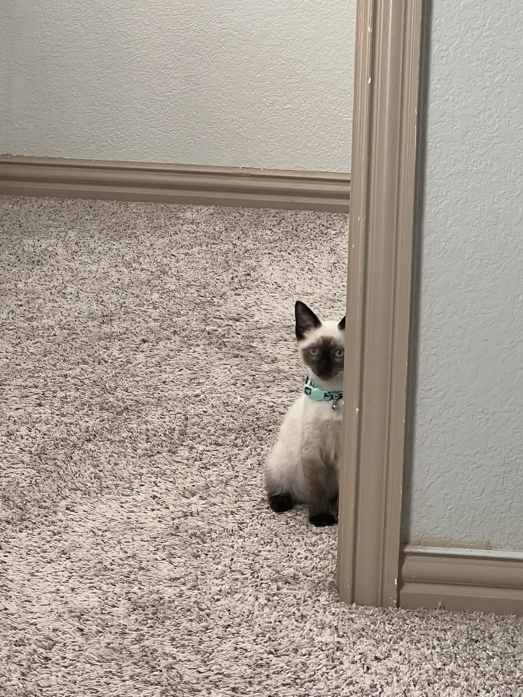
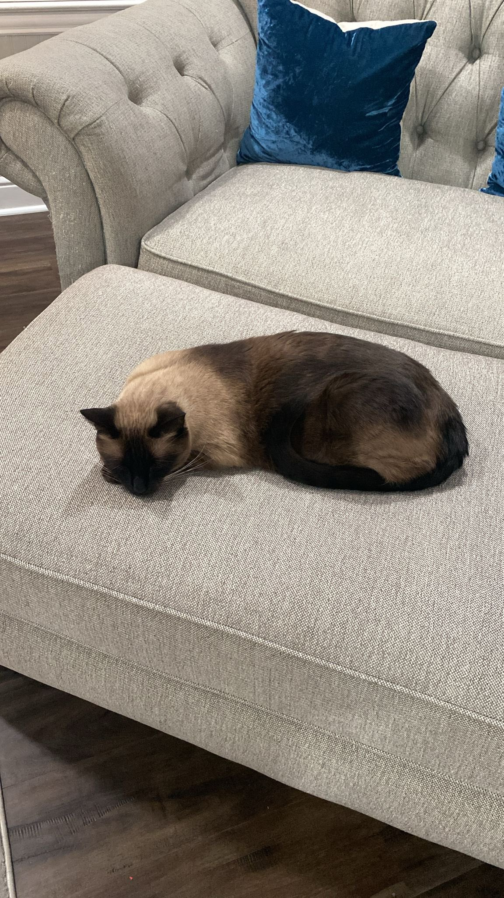
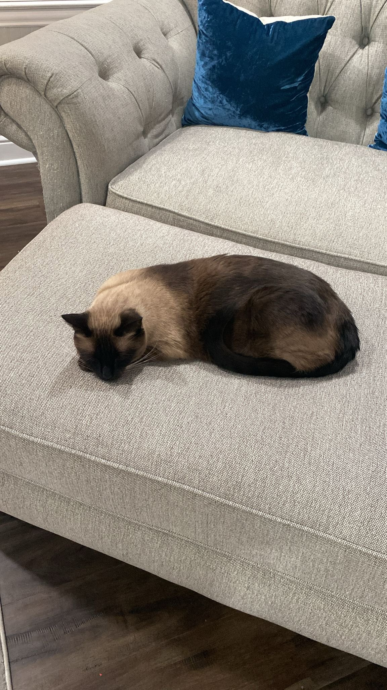
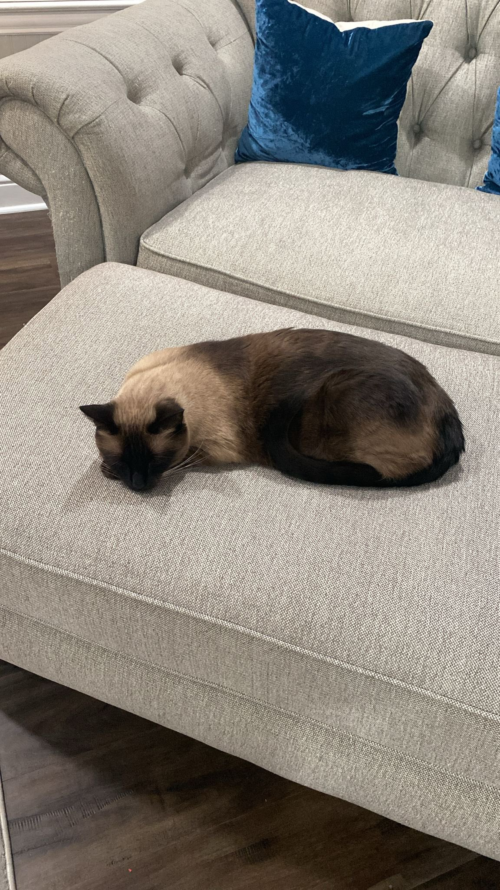

About Me
Hello! My name is Hamza Dwekat and I am an ITSS major at UTD!
I specialize in Cyber Security and am looking to expand my professional career
with an internship this summer 2025!
I have a company certificate in Python and AI/ML with IBuildSoftLLC.
If you would like to contact me please reach me via (1)919-353-3377
or my email at hmzdwekat@gmail.com
Introduction Video
Resume Highlights
All projects that I have done after 2024 are posted on GitHub.com/hamgah/
I have interned at IBuildSoftLLC, gaining experience in cybersecurity and AI/ML.
Here is a link to download my resume:
Fun Facts About Me
I have a cat named Filfil!
He is a Siamese breed and we have had him since he was a baby, but now he is almost 3 years old!

 

